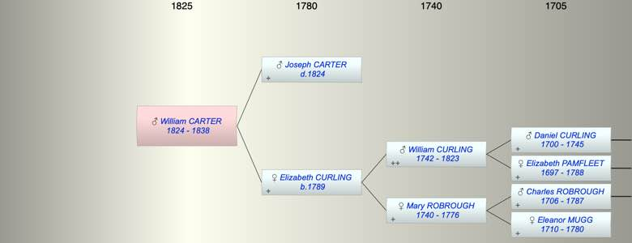

| [Index] |
| William Curling CARTER (1824 - 1838) |
|  |
| b. 01 Feb 1824 |
| d. 1838 at London aged 14 |
| Parents: |
| Joseph Fuller CARTER ( - 1824) |
| Elizabeth CURLING (1789 - ) |
| Siblings (2): |
| Elizabeth CARTER (1818 - ) |
| Mary Curling CARTER (1822 - 1827) |
| Events in William Curling CARTER (1824 - 1838)'s life | |||||
| Date | Age | Event | Place | Notes | Src |
| 1824 | Death of father Joseph Fuller CARTER | Note 1 | |||
| 01 Feb 1824 | William Curling CARTER was born | Note 2 | |||
| 1838 | 14 | William Curling CARTER died | London | Note 3 | |
| Created on a Mac™ using iFamily for Mac™ on 8 Oct 2023 |